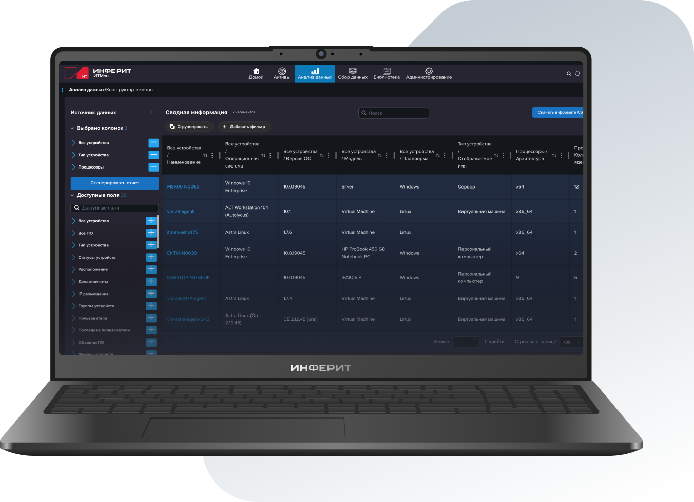

Инферит ИТМен. Сбор данных из Active Directory
Для системных администраторов, специалистов техподдержки, ИТ-инженеров
- Актуальный состав домена: компьютеры, пользователи, OU и группы по LDAP / LDAPS
- Инвентаризация узлов поверх каталога — железо, ПО, сетевые параметры
- Сверка с сетью: устройства вне AD и единый контур для CMDB / ITSM / ITAM
- Российская альтернатива импортным системам инвентаризации

 В реестре
В реестрероссийского ПО
 Применяется в бизнесе
Применяется в бизнесес 2011 года
за 8 часов
 Масштабируется
Масштабируетсябез затрат
 Открытое API
Открытое APIдля интеграции
техподдержки
Вам подойдёт решение, если:
Нужно автоматически получить актуальный список компьютеров и пользователей из домена
Инфраструктура многодоменная или многофилиальная — нужен единый учёт
Важно видеть не только то, что заведено в AD, но и устройства вне домена — теневое ИТ
Данные из AD нужно передавать в CMDB / ITSM без дублей и расхождений
Как это работает
ИТМен использует Active Directory как источник состава домена, а не как единственный источник инвентарных атрибутов. Данные обогащаются сбором с конечных точек и сетевым дискаверингом, затем нормализуются и передаются в учётные системы.
Как подключаемся к домену
ИТМен работает с Active Directory как с источником состава инфраструктуры: задаёте контроллер домена и область синхронизации, получаете актуальный список объектов и дополняете его инвентаризацией.
Можно ограничить сбор выбранными организационными единицами (OU) и работать с одним или несколькими доменами — без выгрузки всего каталога «вслепую».
Подключение к каталогу по LDAP с возможностью защищённого канала (LDAPS). Дальнейшая передача данных в контуре заказчика — с учётом требований ИБ.
Компьютер из AD появляется в учёте сразу — с базовыми данными каталога. Полная инвентаризация узла дополняет карточку по мере доступности агента или безагентного опроса.
Отдельно видны объекты, которые есть в AD, но ещё не опрошены, и устройства в сети, которых нет в каталоге — удобная точка для наведения порядка в учёте.
Что собираем из Active Directory и с узлов
Каталог даёт состав домена. Сбор с конечных точек дополняет его фактическими данными об оборудовании и ПО — без подмены AD и без роли CMDB.
- Объекты компьютеров и пользователей, OU, группы, связь учётной записи с устройством
- Атрибуты каталога, полезные для учёта: расположение, описание, базовая информация об ОС
- Двухэтапная модель: сначала карточка из AD, затем полный сбор с узла
- Конфигурация узла: процессор, память, диски, сетевые адаптеры (IP, MAC, DNS-имя)
- Установленное ПО и версии — для ITAM / SAM и контроля лицензий
- Сверка с сетью: узлы вне каталога и расхождения «заведено в AD / есть в инфраструктуре»
- Несколько доменов и лесов в одной нормализованной базе
- Агентный и безагентный сбор (WinRM, WMI, SSH, SNMP — по политике доступа)
ИТМен помогает сверить каталог с реальностью инфраструктуры: что заведено в AD, что установлено на узлах и что обнаружено в сети вне домена. Это слой сбора и нормализации для ITAM и CMDB, а не аудит прав, GPO и политик безопасности Active Directory.
Собранные данные ИТМен нормализует и передаёт в CMDB, ITSM, ITAM и SAM — без дублей и ручной сверки.
Инферит ИТМен соответствует требованиям
информационной безопасности
Работает в закрытых периметрах: подключение к каталогу по защищённому каналу (в т.ч. LDAPS) и сбор без выхода инфраструктуры в интернет.
Поддержка защищённых протоколов шифрования по ГОСТ для безопасной передачи данных.
Зарегистрирован в реестре программ для ЭВМ (№2016662248), реестровая запись №12289 от 14.12.2021.
Решение без использования Open source: команда разработки, серверная архитектура и средства хранения и компиляции кода — в России.
Частые вопросы
Есть вопросы по продукту или хотите записаться на демо?
Отправьте заявку! Ответим на вопросы и покажем возможности продукта с учётом ваших бизнес-задач и отраслевой специфики.